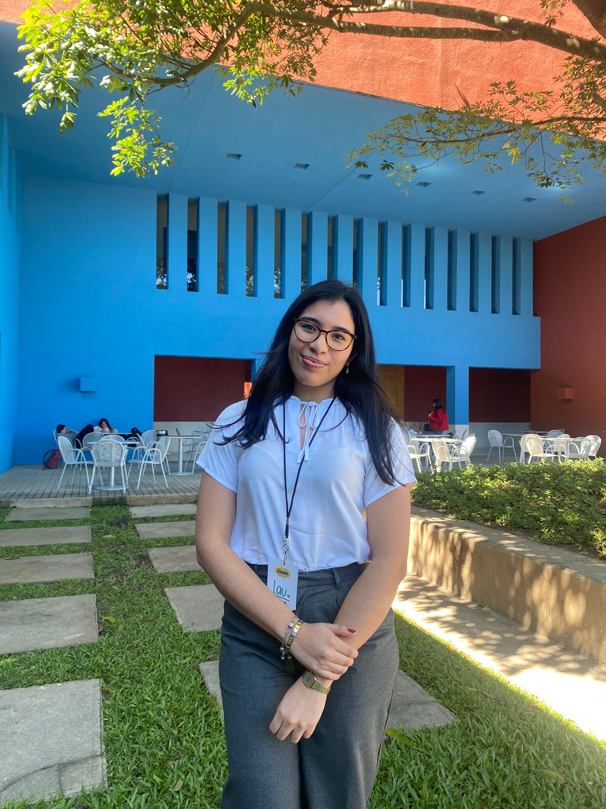
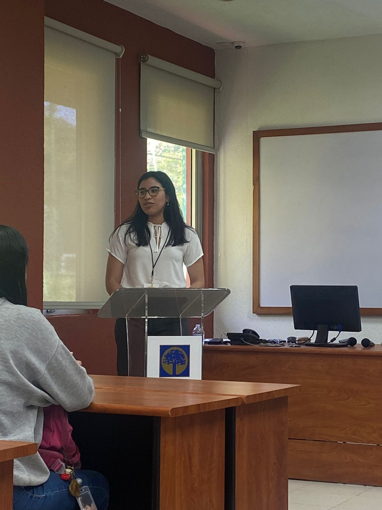

Soy una estudiante de Ingeniería en Software y Negocios Digitales con una fuerte inclinación hacia la implementación de soluciones tecnológicas innovadoras. Me apasiona automatizar procesos y analizar datos para transformar operaciones y generar eficiencia en entornos complejos.
Sobre mí
Formación y Experiencia
Durante mi formación, he trabajado con diversas herramientas tecnológicas como VBA, SQL y Power BI para optimizar flujos de trabajo, mejorar la precisión en la gestión de información y facilitar la toma de decisiones basadas en datos.
Mi enfoque está en fusionar conocimientos de programación con métodos analíticos para resolver problemas prácticos y tecnológicos.
